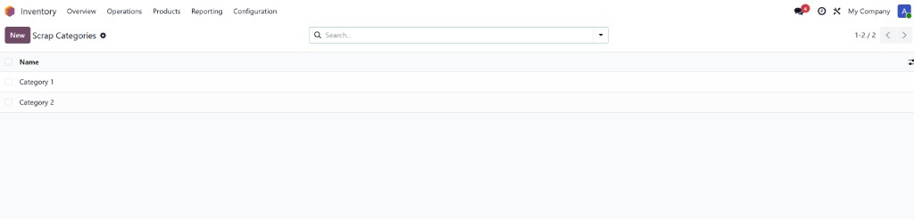
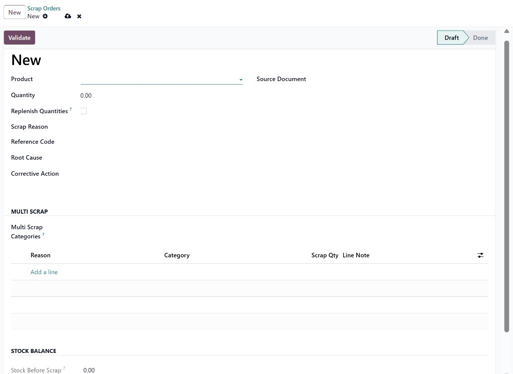
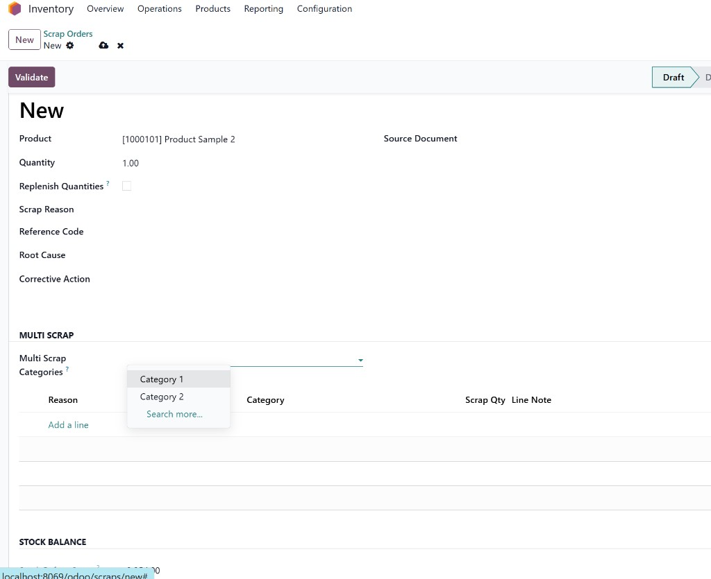
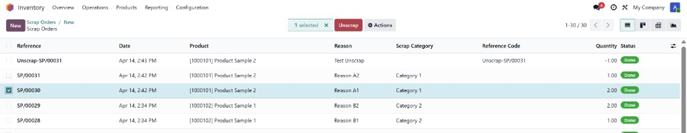

Multi Scrap & Unscrap Management
Advanced scrap control with clear reasons, safer reversals, and full traceability.
Odoo 19
Inventory
Manufacturing
Armonia
Why this module matters
Scrap operations are often where traceability breaks. This module standardizes how teams record scrap reasons, split quantities, and execute controlled unscrap flows without losing audit clarity.
What you get
- Scrap Categories + Reasons with clean governance from Inventory settings.
- Single and multi-reason scrap in the same operational screen.
- Strict quantity control for split lines to avoid inconsistencies.
- Reason loading by category for faster operator entry.
- Unscrap wizard with mandatory reason for accountable reversals.
- Partial and full reversal history with complete audit visibility.
- Unified list columns for reason, category, quantity, and status.
Typical workflow
- Go to Inventory > Configuration > Scrap Configuration.
- Create categories first, then create reasons linked to those categories.
- Run scrap in simple mode or split by multiple reasons.
- Run unscrap from done records through the dedicated wizard.
Screenshots - Setup



Screenshots - Scrap flow



Screenshots - Unscrap flow



Support